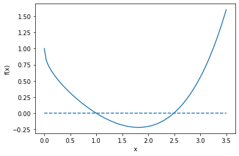
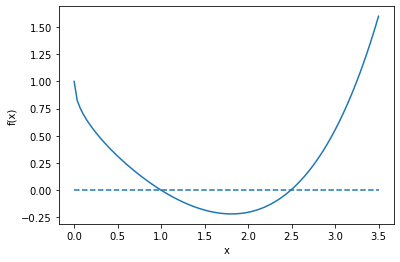
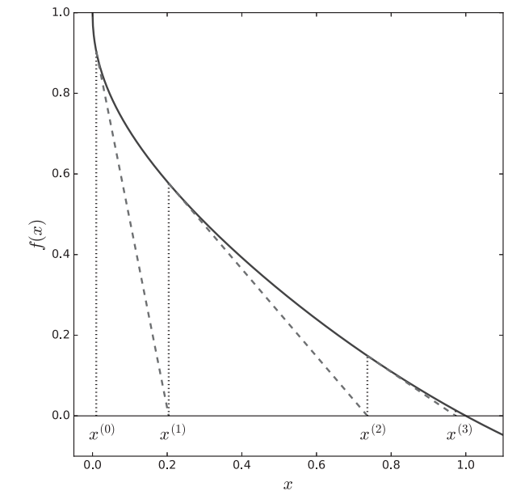
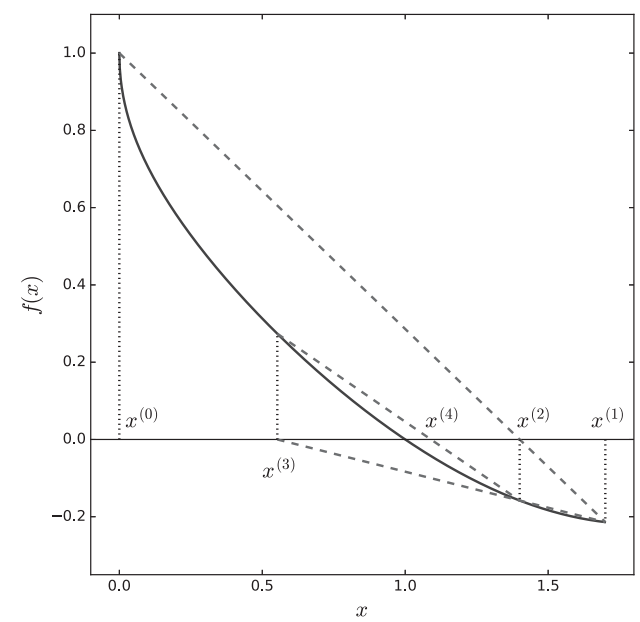
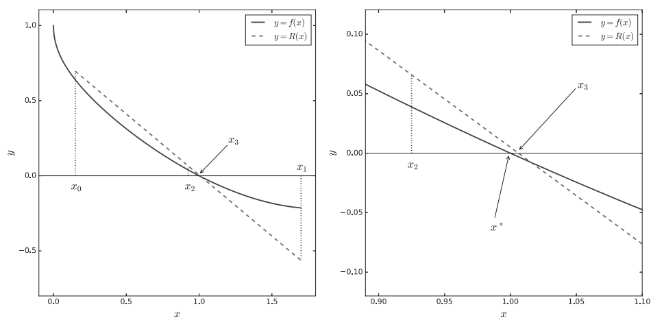

import numpy as np
import matplotlib.pyplot as plt
x = np.linspace(0,3.5,100)
fx = np.exp(x - np.sqrt(x)) - x
plt.plot(x,fx,'-')
plt.hlines(y=0,xmin=0,xmax=3.5,ls='--')
plt.xlabel('x')
plt.ylabel('f(x)')Text(0, 0.5, 'f(x)')
Nonlinear Equation in One Variable
Let us consider a few examples in Physics.
As you may recall, the classical ideal gas “law” has the form: Pv = RT where P is the pressure, v is the molar volume, R is the gas constant, and T is the temperature.
This ignores the finite size of the gas molecules, as well as the mutual attraction between molecules. Correcting for these features “by hand” (or via the formalism of statistical mechanics) leads to the so-called van der Waals equation of state: (P + \frac{a}{v^2})(v-b) = RT, where a and b are the parameters that depend on the gas. Assume you know the pressure and the temperature and wish to evaluate the molar volume. As you can see by multiplying this equation with v^2, you get a cubic equation in v. Although cubic equation can still be solved analytically, you can consider even more complicated but realistic models. Then you have to use numerical methods to find solutions.
In the problem of finding eigenstates of a single particle restricted in a finite square well potential, we will encounter such a transcendental equation k\tan ka = \kappa, where k, a and \kappa are parameters of the system. If we want to solve for k given a and \kappa, we have to take the numerical approach.
At its most basic level, the problem we are faced with is as follows: you are given a function f(x) and you need to find its zeros. In other words, you need to solve the equation f(x)=0 (the solutions of this equation are known as roots). Thus, our task is to solve: f(x) = 0, where f(x) is generally nonlinear.The f(x) involved may be a polynomial, a special function, or a complicated programming routine (which makes each function evaluation quite costly). In what follows, we will denote our root by x^*.
To give an example: f(x) = x^2 - 5 = 0 is very easy to write down. Anyone can “solve” it by saying x^2 = 5 followed by x = \pm\sqrt{5}. This is where things are not so easy any more: what is the value of \sqrt{5} ? You can use a calculator, or use python built-in function sqrt. But how do these tools figure out which number gives 5 when squared? We will encounter several general-use methods later to find out the answer.
A complication arises when you are faced with a single polynomial and need to evaluate its zeros. In equation form c_0 + c_1 x + \cdots + c_{n-1}x^{n-1} = 0. This is a single equation, but it has n-1 roots.
A more complicated version of the earlier problem (one nonlinear equation in one variable) is the case where we have n simultaneous nonlinear equations n unknowns: \begin{cases} f_{0}(x_{0},x_{1,}\dots,x_{n-1}) & =0\\ f_{1}(x_{0},x_{1,}\dots,x_{n-1}) & =0\\ & \vdots\\ f_{n-1}(x_{0},x_{1},\dots,x_{n-1}) & =0 \end{cases} which can be recast using our vector notation \boldsymbol{f(x) = 0}.
The final problem we attack on this topic is related yet distinct: instead of trying to find the zeros of a function, find the points where the function attains a minimum (or, as we will see, a maximum). Using the notation we introduced above, this problem would have the form: \min \phi(\boldsymbol{x}) where \boldsymbol{x} = (x_0, x_1, \dots, x_{n-1}), and \phi is a function producing scalar values.
Let us consider a concrete problem, solving e^{x-\sqrt{x}} - x = 0.
Most simply, we can find out the roots by plotting the function.
import numpy as np
import matplotlib.pyplot as plt
x = np.linspace(0,3.5,100)
fx = np.exp(x - np.sqrt(x)) - x
plt.plot(x,fx,'-')
plt.hlines(y=0,xmin=0,xmax=3.5,ls='--')
plt.xlabel('x')
plt.ylabel('f(x)')Text(0, 0.5, 'f(x)')
We see that our function has two zeros, one near x^*\simeq 1 and another one near x^∗ \simeq 2.5. We can check that x^*=1 is indeed a root.
Now, turning to ways of solving our equation: we’ll need a method that can find both roots, preferably in comparable amounts of time. (While we already analytically know one of the roots, we’ll keep things general.) The most naive approach, having already plotted the function, is to try out different values (or perhaps even a very fine grid) near where we expect the roots to be. This is not a great idea, for several reasons:
At a big-picture level, we can divide root-finding methods into two large classes:
While the distinction between bracketing and non-bracketing methods is very important and should always be borne in mind when thinking about a given approach, we will not introduce these methods in that order. Instead, we will employ a pedagogical approach, starting with simple methods first (which end up being very slow) and increasing the sophistication level as we go.
When discussing solving systems of linear equations, \boldsymbol{A}\boldsymbol{x} = \boldsymbol{b}, we encountered the question of how \boldsymbol{x} is impacted when we slightly perturb \boldsymbol{A}. This led us to introduce the condition number \kappa(\boldsymbol{A}) as a measure of how much (or how little) a perturbation in the coefficient matrix, \|\Delta \boldsymbol{A} \|/\|\boldsymbol{A}\|, is amplified when evaluating the effect on the solution vector, \|\Delta \boldsymbol{x}\|/\| \boldsymbol{x}\|.
We will now do something analogous, this time for the case of absolute changes. The problem we are now solving is the nonlinear equation f(x) = 0, so the perturbations in the system would be perturbations of the value of the function f.
To be specific, the exact root is denoted by x^*, and the approximate value for it is denoted as \tilde{x}^*. What we’ll do is to Taylor expand f(\tilde{x}^*) around x^*. This gives us: f(\tilde{x}^*) - f(x^*) = f(x^* + \Delta x^*) - f(x^*) \simeq f'(x^*)\Delta x^*, where \Delta x^* = \tilde{x}^* - x^*.
This implies \Delta x^* \simeq \frac{1}{f'(x^*)}[f(\tilde{x}^*) - f(x^*)], which allows us to introduce a condition number for our problem: \kappa_f = \frac{1}{f'(x^*)}.
Thus, a larger f'(x^*) gives a small \kappa_f, indicating a well-conditioned problem.
Our goal is to find an x^∗ such that f(x^∗) = 0. Except for very low-degree polynomials, this is a problem that does not have an analytical solution with a closed formula. In practice, we have to resort to iterative methods. For these iterative methods, we have to first have an initial root estimate x^{(0)}.
We will have a sequence of iterates, x^{(0)}, x^{(1)}, x^{(2)}, \cdots, x^{(k)} which will be approaching x^*. Let us assume that we are dealing with a convergent method and that x^{(k)} will be close to the root x^*. We shall discuss the meaning “close” below.
If there exist a constant m\neq 0 and a number p such that: |x^{(k)} - x^*| \leq m |x^{(k-1)} - x^*|^p for k sufficiently large, then m is called the asymptotic error constant and p is called the order of convergence.
Practically, one can use another test for convergence \frac{|x^{(k)} - x^{(k-1)}|}{|x^{(k)}|}\leq \epsilon. Sometimes, x^{(k)} may be small, then we may use \frac{|x^{(k)} - x^{(k-1)}|}{1+|x^{(k)}|}\leq \epsilon as a convergence criterion.
This algorithm solves the following problem x = g(x). A point x^* satisfying the above relation is called a fixed point of g.
The algorithm is:
Let us consider the problem g(x) = e^{x - \sqrt{x}}.
import numpy as np
def g(x):
return np.exp(x - np.sqrt(x))
def fixedpoint(g,xold,kmax=200,tol=1.e-8):
for k in range(1,kmax):
xnew = g(xold)
xdiff = xnew - xold
print("{0:2d} {1:1.16f} {2:1.16f}".format(k,xnew,xdiff))
if abs(xdiff/xnew) < tol:
break
xold = xnew
else:
xnew = None
return xnew
if __name__ == '__main__':
for xold in (0.99, 2.499):
x = fixedpoint(g,xold)
print(x) 1 0.9950249795068901 0.0050249795068901
2 0.9975186749161311 0.0024936954092410
3 0.9987608763846132 0.0012422014684821
4 0.9993808220095828 0.0006199456249696
5 0.9996905068451969 0.0003096848356141
6 0.9998452773684844 0.0001547705232875
7 0.9999226446689382 0.0000773673004538
8 0.9999613238304214 0.0000386791614831
9 0.9999806622891710 0.0000193384587497
10 0.9999903312380722 0.0000096689489012
11 0.9999951656424073 0.0000048344043351
12 0.9999975828270463 0.0000024171846390
13 0.9999987914149838 0.0000012085879375
14 0.9999993957078571 0.0000006042928733
15 0.9999996978540199 0.0000003021461628
16 0.9999998489270328 0.0000001510730129
17 0.9999999244635221 0.0000000755364894
18 0.9999999622317625 0.0000000377682403
19 0.9999999811158816 0.0000000188841192
20 0.9999999905579409 0.0000000094420592
0.9999999905579409
1 2.5047211959255882 0.0057211959255881
2 2.5145405344896088 0.0098193385640206
3 2.5314955389430209 0.0169550044534121
4 2.5610776263207149 0.0295820873776940
5 2.6136322055597172 0.0525545792390023
6 2.7100281298330811 0.0963959242733639
7 2.8973943199022352 0.1873661900691541
8 3.3042876376136805 0.4068933177114453
9 4.4216709817920821 1.1173833441784016
10 10.1644263605947831 5.7427553788027010
11 1070.9020500060432823 1060.7376236454485934
12 inf inf
13 nan nan
14 nan nan
15 nan nan
16 nan nan
17 nan nan
18 nan nan
19 nan nan
20 nan nan
21 nan nan
22 nan nan
23 nan nan
24 nan nan
25 nan nan
26 nan nan
27 nan nan
28 nan nan
29 nan nan
30 nan nan
31 nan nan
32 nan nan
33 nan nan
34 nan nan
35 nan nan
36 nan nan
37 nan nan
38 nan nan
39 nan nan
40 nan nan
41 nan nan
42 nan nan
43 nan nan
44 nan nan
45 nan nan
46 nan nan
47 nan nan
48 nan nan
49 nan nan
50 nan nan
51 nan nan
52 nan nan
53 nan nan
54 nan nan
55 nan nan
56 nan nan
57 nan nan
58 nan nan
59 nan nan
60 nan nan
61 nan nan
62 nan nan
63 nan nan
64 nan nan
65 nan nan
66 nan nan
67 nan nan
68 nan nan
69 nan nan
70 nan nan
71 nan nan
72 nan nan
73 nan nan
74 nan nan
75 nan nan
76 nan nan
77 nan nan
78 nan nan
79 nan nan
80 nan nan
81 nan nan
82 nan nan
83 nan nan
84 nan nan
85 nan nan
86 nan nan
87 nan nan
88 nan nan
89 nan nan
90 nan nan
91 nan nan
92 nan nan
93 nan nan
94 nan nan
95 nan nan
96 nan nan
97 nan nan
98 nan nan
99 nan nan
100 nan nan
101 nan nan
102 nan nan
103 nan nan
104 nan nan
105 nan nan
106 nan nan
107 nan nan
108 nan nan
109 nan nan
110 nan nan
111 nan nan
112 nan nan
113 nan nan
114 nan nan
115 nan nan
116 nan nan
117 nan nan
118 nan nan
119 nan nan
120 nan nan
121 nan nan
122 nan nan
123 nan nan
124 nan nan
125 nan nan
126 nan nan
127 nan nan
128 nan nan
129 nan nan
130 nan nan
131 nan nan
132 nan nan
133 nan nan
134 nan nan
135 nan nan
136 nan nan
137 nan nan
138 nan nan
139 nan nan
140 nan nan
141 nan nan
142 nan nan
143 nan nan
144 nan nan
145 nan nan
146 nan nan
147 nan nan
148 nan nan
149 nan nan
150 nan nan
151 nan nan
152 nan nan
153 nan nan
154 nan nan
155 nan nan
156 nan nan
157 nan nan
158 nan nan
159 nan nan
160 nan nan
161 nan nan
162 nan nan
163 nan nan
164 nan nan
165 nan nan
166 nan nan
167 nan nan
168 nan nan
169 nan nan
170 nan nan
171 nan nan
172 nan nan
173 nan nan
174 nan nan
175 nan nan
176 nan nan
177 nan nan
178 nan nan
179 nan nan
180 nan nan
181 nan nan
182 nan nan
183 nan nan
184 nan nan
185 nan nan
186 nan nan
187 nan nan
188 nan nan
189 nan nan
190 nan nan
191 nan nan
192 nan nan
193 nan nan
194 nan nan
195 nan nan
196 nan nan
197 nan nan
198 nan nan
199 nan nan
NoneC:\Users\pengy\AppData\Local\Temp\ipykernel_16604\827739561.py:4: RuntimeWarning: overflow encountered in exp
return np.exp(x - np.sqrt(x))
C:\Users\pengy\AppData\Local\Temp\ipykernel_16604\827739561.py:13: RuntimeWarning: invalid value encountered in double_scalars
if abs(xdiff/xnew) < tol:
C:\Users\pengy\AppData\Local\Temp\ipykernel_16604\827739561.py:4: RuntimeWarning: invalid value encountered in double_scalars
return np.exp(x - np.sqrt(x))Note that we get x^* = 1 successfully. However, the other fixed point x^*\simeq 2.5 can not be found even if we started at 2.499.
Now, if we take x = e^{x-\sqrt{x}} and rewrite it as \ln x = x - \sqrt{x}, or x = \ln x + \sqrt{x}, we can take g(x) = \ln x + \sqrt{x}. The fixed point of this g(x) can be calculated below.
import numpy as np
def g(x):
return np.log(x) + np.sqrt(x)
def fixedpoint(g,xold,kmax=200,tol=1.e-8):
for k in range(1,kmax):
xnew = g(xold)
xdiff = xnew - xold
print("{0:2d} {1:1.16f} {2:1.16f}".format(k,xnew,xdiff))
if abs(xdiff/xnew) < tol:
break
xold = xnew
else:
xnew = None
return xnew
if __name__ == '__main__':
for xold in (0.99, 2.499):
x = fixedpoint(g,xold)
print(x) 1 0.9849371012531185 -0.0050628987468815
2 0.9772624771823942 -0.0076746240707243
3 0.9655658621701254 -0.0116966150122688
4 0.9475911454393494 -0.0179747167307760
5 0.9196107829003974 -0.0279803625389520
6 0.8751586292403727 -0.0444521536600248
7 0.8021490152512132 -0.0730096139891595
8 0.6751668375278304 -0.1269821777233828
9 0.4288899121282286 -0.2462769253996017
10 -0.1916581367026353 -0.6205480488308639
11 nan nan
12 nan nan
13 nan nan
14 nan nan
15 nan nan
16 nan nan
17 nan nan
18 nan nan
19 nan nan
20 nan nan
21 nan nan
22 nan nan
23 nan nan
24 nan nan
25 nan nan
26 nan nan
27 nan nan
28 nan nan
29 nan nan
30 nan nan
31 nan nan
32 nan nan
33 nan nan
34 nan nan
35 nan nan
36 nan nan
37 nan nan
38 nan nan
39 nan nan
40 nan nan
41 nan nan
42 nan nan
43 nan nan
44 nan nan
45 nan nan
46 nan nan
47 nan nan
48 nan nan
49 nan nan
50 nan nan
51 nan nan
52 nan nan
53 nan nan
54 nan nan
55 nan nan
56 nan nan
57 nan nan
58 nan nan
59 nan nan
60 nan nan
61 nan nan
62 nan nan
63 nan nan
64 nan nan
65 nan nan
66 nan nan
67 nan nan
68 nan nan
69 nan nan
70 nan nan
71 nan nan
72 nan nan
73 nan nan
74 nan nan
75 nan nan
76 nan nan
77 nan nan
78 nan nan
79 nan nan
80 nan nan
81 nan nan
82 nan nan
83 nan nan
84 nan nan
85 nan nan
86 nan nan
87 nan nan
88 nan nan
89 nan nan
90 nan nan
91 nan nan
92 nan nan
93 nan nan
94 nan nan
95 nan nan
96 nan nan
97 nan nan
98 nan nan
99 nan nan
100 nan nan
101 nan nan
102 nan nan
103 nan nan
104 nan nan
105 nan nan
106 nan nan
107 nan nan
108 nan nan
109 nan nan
110 nan nan
111 nan nan
112 nan nan
113 nan nan
114 nan nan
115 nan nan
116 nan nan
117 nan nan
118 nan nan
119 nan nan
120 nan nan
121 nan nan
122 nan nan
123 nan nan
124 nan nan
125 nan nan
126 nan nan
127 nan nan
128 nan nan
129 nan nan
130 nan nan
131 nan nan
132 nan nan
133 nan nan
134 nan nan
135 nan nan
136 nan nan
137 nan nan
138 nan nan
139 nan nan
140 nan nan
141 nan nan
142 nan nan
143 nan nan
144 nan nan
145 nan nan
146 nan nan
147 nan nan
148 nan nan
149 nan nan
150 nan nan
151 nan nan
152 nan nan
153 nan nan
154 nan nan
155 nan nan
156 nan nan
157 nan nan
158 nan nan
159 nan nan
160 nan nan
161 nan nan
162 nan nan
163 nan nan
164 nan nan
165 nan nan
166 nan nan
167 nan nan
168 nan nan
169 nan nan
170 nan nan
171 nan nan
172 nan nan
173 nan nan
174 nan nan
175 nan nan
176 nan nan
177 nan nan
178 nan nan
179 nan nan
180 nan nan
181 nan nan
182 nan nan
183 nan nan
184 nan nan
185 nan nan
186 nan nan
187 nan nan
188 nan nan
189 nan nan
190 nan nan
191 nan nan
192 nan nan
193 nan nan
194 nan nan
195 nan nan
196 nan nan
197 nan nan
198 nan nan
199 nan nan
None
1 2.4967132225418855 -0.0022867774581146
2 2.4950742738487812 -0.0016389486931043
3 2.4938989085322354 -0.0011753653165458
4 2.4930556295838491 -0.0008432789483863
5 2.4924504188398293 -0.0006052107440198
6 2.4920159683111445 -0.0004344505286848
7 2.4917040473019760 -0.0003119210091684
8 2.4914800722657500 -0.0002239750362261
9 2.4913192333987566 -0.0001608388669934
10 2.4912037263370528 -0.0001155070617038
11 2.4911207709026488 -0.0000829554344040
12 2.4910611917076024 -0.0000595791950464
13 2.4910184005431231 -0.0000427911644794
14 2.4909876664406752 -0.0000307341024479
15 2.4909655918855487 -0.0000220745551265
16 2.4909497368590046 -0.0000158550265441
17 2.4909383489348955 -0.0000113879241090
18 2.4909301694866981 -0.0000081794481974
19 2.4909242945285412 -0.0000058749581568
20 2.4909200747806546 -0.0000042197478867
21 2.4909170438994339 -0.0000030308812207
22 2.4909148669325525 -0.0000021769668814
23 2.4909133032986395 -0.0000015636339130
24 2.4909121801982073 -0.0000011231004322
25 2.4909113735163491 -0.0000008066818582
26 2.4909107941061746 -0.0000005794101745
27 2.4909103779368764 -0.0000004161692981
28 2.4909100790175280 -0.0000002989193484
29 2.4909098643145522 -0.0000002147029758
30 2.4909097101011435 -0.0000001542134087
31 2.4909095993352044 -0.0000001107659391
32 2.4909095197760154 -0.0000000795591890
33 2.4909094626315103 -0.0000000571445051
34 2.4909094215866654 -0.0000000410448449
35 2.4909093921056282 -0.0000000294810372
36 2.4909093709304582 -0.0000000211751701
2.490909370930458C:\Users\pengy\AppData\Local\Temp\ipykernel_16604\158291069.py:4: RuntimeWarning: invalid value encountered in log
return np.log(x) + np.sqrt(x)
C:\Users\pengy\AppData\Local\Temp\ipykernel_16604\158291069.py:4: RuntimeWarning: invalid value encountered in sqrt
return np.log(x) + np.sqrt(x)In this new program, x^* \simeq 2.5 is found successfully, but not the other.
From x^{(k)} = g(x^{(k-1)}) and x^* = g(x^*), we have x^{(k)} - x^* = g(x^{(k-1)}) - g(x^*) = g'(\xi)(x^{(k-1)} - x^*), with some \xi between x^{(k-1)} and x^*. If |g'(\xi)|\leq m <1, we will have |x^{(k)}- x^*| \leq m |x^{(k-1)} - x^*| \leq m^2 |x^{(k-2)} - x^*| \leq \dots \leq m^k|x^{(0)} - x^*|.
Let us first consider g(x) = e^{x - \sqrt{x}}. We have g'(x^*) = (1 -\frac{1}{2\sqrt{x^*}})x^* = x^* - \frac{\sqrt{x^*}}{2}. For x^*=1, we have g'(x^*)= \frac{1}{2}<1, indicating near x^*=1 the method is convergent. For x^*\simeq 2.5, g'(x^*)>1, that’s why the method is not convergent.
The problem of the fixed-point iteration is that the mapping from f(x) = 0 to x = g(x) is not unique. Also, if g'(\xi)>1, the fixed-point iteration method diverges. It would be nice to have a more stable method. This is precisely what the bisection method accomplishes; it is a slow method, which doesn’t really generalize to higher-dimensional problems, but it is safe and systematic.
The bisection method assumes you have already bracketed the root; that means that you have found an x0 and an x1 for which f(x_0) and f(x_1) have opposite signs. The algorithm:
Let us denote x^{(k)} as the midpoint obtained in the kth step. Let us denote the initial interaval as (a,b), we have |x^{(k)} - x^*| \leq \frac{b-a}{2^{k+1}}
For each order higher in k, we get an additional factor of 1/2, and thus the bisection method gives linear convergence.
We will use the termination criterion \frac{|x^{(k)} - x^{(k-1)}|}{|x^{(k)}|}\leq \epsilon
import numpy as np
def f(x):
return np.exp(x - np.sqrt(x)) - x
def bisection(f,x0,x1,kmax=200,tol=1.e-8):
f0 = f(x0)
for k in range(1,kmax):
x2 = (x0+x1)/2
f2 = f(x2)
if f0*f2 < 0:
x1 = x2
else:
x0, f0 = x2, f2
x2new = (x0+x1)/2
xdiff = np.abs(x2new-x2)
rowf = "{0:2d} {1:1.16f} {2:1.16f} {3:1.16f}"
print(rowf.format(k,x2new,xdiff,np.abs(f(x2new))))
if np.abs(xdiff/x2new) < tol:
break
else:
x2new = None
return x2new
if __name__ == '__main__':
root = bisection(f,0.,1.5)
print(root); print("")
root = bisection(f,1.5,3.)
print(root) 1 1.1250000000000000 0.3750000000000000 0.0585452513912128
2 0.9375000000000000 0.1875000000000000 0.0322220096468296
3 1.0312500000000000 0.0937500000000000 0.0153801917893579
4 0.9843750000000000 0.0468750000000000 0.0078734577169989
5 1.0078125000000000 0.0234375000000000 0.0038909811511951
6 0.9960937500000000 0.0117187500000000 0.0019569384633997
7 1.0019531250000000 0.0058593750000000 0.0009756086699708
8 0.9990234375000000 0.0029296875000000 0.0004885196492074
9 1.0004882812500000 0.0014648437500000 0.0002440810179281
10 0.9997558593750000 0.0007324218750000 0.0001220852133581
11 1.0001220703125000 0.0003662109375000 0.0000610314309217
12 0.9999389648437500 0.0001831054687500 0.0000305185094428
13 1.0000305175781250 0.0000915527343750 0.0000152585562312
14 0.9999847412109375 0.0000457763671875 0.0000076294527388
15 1.0000076293945312 0.0000228881835938 0.0000038146827137
16 0.9999961853027344 0.0000114440917969 0.0000019073522708
17 1.0000019073486328 0.0000057220458984 0.0000009536734069
18 0.9999990463256836 0.0000028610229492 0.0000004768373856
19 1.0000004768371582 0.0000014305114746 0.0000002384185223
20 0.9999997615814209 0.0000007152557373 0.0000001192093038
21 1.0000001192092896 0.0000003576278687 0.0000000596046412
22 0.9999999403953552 0.0000001788139343 0.0000000298023233
23 1.0000000298023224 0.0000000894069672 0.0000000149011612
24 0.9999999850988388 0.0000000447034836 0.0000000074505806
25 1.0000000074505806 0.0000000223517418 0.0000000037252903
26 0.9999999962747097 0.0000000111758709 0.0000000018626451
27 1.0000000018626451 0.0000000055879354 0.0000000009313226
1.0000000018626451
1 2.6250000000000000 0.3750000000000000 0.1064014398192343
2 2.4375000000000000 0.1875000000000000 0.0356230351130975
3 2.5312500000000000 0.0937500000000000 0.0293964402317419
4 2.4843750000000000 0.0468750000000000 0.0045574885289668
5 2.5078125000000000 0.0234375000000000 0.0120518421269580
6 2.4960937500000000 0.0117187500000000 0.0036561016538679
7 2.4902343750000000 0.0058593750000000 0.0004733589489967
8 2.4931640625000000 0.0029296875000000 0.0015856921045336
9 2.4916992187500000 0.0014648437500000 0.0005547483769988
10 2.4909667968750000 0.0007324218750000 0.0000403403649947
11 2.4906005859375000 0.0003662109375000 0.0002165978541178
12 2.4907836914062500 0.0001831054687500 0.0000881508882320
13 2.4908752441406250 0.0000915527343750 0.0000239107979292
14 2.4909210205078125 0.0000457763671875 0.0000082133994064
15 2.4908981323242188 0.0000228881835938 0.0000078490452871
16 2.4909095764160156 0.0000114440917969 0.0000001820905529
17 2.4909038543701172 0.0000057220458984 0.0000038334989942
18 2.4909067153930664 0.0000028610229492 0.0000018257096275
19 2.4909081459045410 0.0000014305114746 0.0000008218108891
20 2.4909088611602783 0.0000007152557373 0.0000003198605061
21 2.4909092187881470 0.0000003576278687 0.0000000688850612
22 2.4909093976020813 0.0000001788139343 0.0000000566027243
23 2.4909093081951141 0.0000000894069672 0.0000000061411738
24 2.4909093528985977 0.0000000447034836 0.0000000252307739
25 2.4909093305468559 0.0000000223517418 0.0000000095448001
2.490909330546856We now turn to Newton’s method (sometimes also called the Newton–Raphson method): this is the simplest fast method used for root-finding. It also happens to generalize to larger-dimensional problems in a reasonably straightforward manner. At a big-picture level, Newton’s method requires more input than the approaches we saw earlier: in addition to being able to evaluate the function f(x), one must also be able to evaluate its first derivative f'(x). This is obviously trivial for our example above, where f(x) is analytically known, but may not be so easy to access for the case where f(x) is an externally provided (costly) routine. Furthermore, to give the conclusion ahead of time: there are many situations in which Newton’s method can get in trouble, so it always pays to think about your specific problem instead of blindly trusting a canned routine. Even so, if you already have a reasonable estimate of where the root may lie, Newton’s method is usually a fast and reliable solution.
We will assume that f(x) has continuous first and second derivatives. Take x^{(k-1)} to be the last iterate we’ve produced (or just an initial guess). We will now write down a Taylor expansion of f(x) around x^{(k-1)}: f(x) = f(x^{(k-1)}) + (x - x^{(k-1)})f'(x^{(k-1)}) + \frac{1}{2}(x - x^{(k-1)})^2f''(\xi), where \xi is a point between x and x^{(k-1)}. If we now take x = x^* then we have f(x^*) = 0. If f(x) is linear then we have 0 = f(x^{(k-1)}) + (x^* - x^{(k-1)})f'(x^{(k-1)}), or x^* = x^{(k-1)} - \frac{f(x^{(k-1)})}{f'(x^{(k-1)})}. \tag{1} Thus, if the function f(x) is linear, with an initial guess, the function value and its derivative (at the guess), one can locate the root.
This motivates Newton’s method: if f(x) is nonlinear, we still use the same formula Equation 1, with iterations x^{(k)} = x^{(k-1)} - \frac{f(x^{(k-1)})}{f'(x^{(k-1)})}, \quad k = 1,2,\dots \tag{2}

The Newton’s method is illustrated in Figure 1.
If we do not neglect the second order derivative, we have 0 = f(x^{(k-1)}) + (x^* - x^{(k-1)})f'(x^{(k-1)}) + \frac{1}{2}(x^* - x^{(k-1)})^2f''(\xi), which can be manipulated into -\frac{f(x^{(k-1)})}{f'(x^{(k-1)})} - x^*+x^{(k-1)} = \frac{(x^* - x^{(k-1)})^2f''(\xi)}{2f'(x^{(k-1)})}. Using Equation 2, we have x^{(k)}- x^* = \left[\frac{f''(\xi)}{2f'(x^{(k-1)})} \right](x^{(k-1)} - x^*)^2.
Thus, under the assumption \left[\frac{f''(\xi)}{2f'(x^{(k-1)})} \right]\leq m < 1, we have that the Newton’s method is quadratically convergent.
Newton’s method involves derivative evaluation, which can be costly. Here, we want to introduce a similar method but without direct derivative evaluations. This method is the secant method.
The secant method replaces the evaluation of the derivative, needed for Newton’s method, by a single function evaluation. Particularly, we introduce the approximation f'(x^{(k-1)}) = \frac{f'(x^{(k-1)})-f'(x^{(k-2)})}{x^{(k-1)} - x^{(k-2)}}.
Using this approximation and Equation 2, we have x^{(k)} = x^{(k-1)} - f(x^{(k-1)})\frac{x^{(k-1)} - x^{(k-2)}}{f(x^{(k-1)})-f(x^{(k-2)})}, \quad k = 2,3,\dots where we start the iteration k = 2, as we need two initial guesses as starting points. Once we get going, though, we only need to evaluate the function once per iteration.

This method is illustrated in Figure 2.
import numpy as np
def f(x):
return np.exp(x - np.sqrt(x)) - x
def secant(f,x0,x1,kmax=200,tol=1.e-8):
f0 = f(x0)
for k in range(1,kmax):
f1 = f(x1)
ratio = (x1 - x0)/(f1 - f0)
x2 = x1 - f1*ratio
xdiff = abs(x2-x1)
x0, x1 = x1, x2
f0 = f1
rowf = "{0:2d} {1:1.16f} {2:1.16f} {3:1.16f}"
print(rowf.format(k,x2,xdiff,abs(f(x2))))
if abs(xdiff/x2) < tol:
break
else:
x2 = None
return x2
if __name__ == '__main__':
root = secant(f,0.,1.7)
print(root); print("")
root = secant(f,2.,2.1)
print(root) 1 1.4004521854971097 0.2995478145028903 0.1580519765211532
2 0.5526242043685871 0.8478279811285226 0.2737043845137117
3 1.0900899065346898 0.5374657021661028 0.0429985337663841
4 1.0171185639642890 0.0729713425704008 0.0084859132802808
5 0.9991764756419195 0.0179420883223695 0.0004119317155123
6 1.0000071166820816 0.0008306410401622 0.0000035583283791
7 1.0000000029289857 0.0000071137530959 0.0000000014644927
8 0.9999999999999898 0.0000000029289959 0.0000000000000051
0.9999999999999898
1 2.9792935568396453 0.8792935568396452 0.5223433070698373
2 2.3279525096516824 0.6513410471879628 0.0975332367096038
3 2.4304364658064559 0.1024839561547735 0.0400602911601338
4 2.5018707221082970 0.0714342563018411 0.0077720681470095
5 2.4902636862846230 0.0116070358236740 0.0004528144783174
6 2.4909027025612960 0.0006390162766730 0.0000046418045581
7 2.4909093209671904 0.0000066184058944 0.0000000028219960
8 2.4909093169459600 0.0000000040212305 0.0000000000000178
2.49090931694596We realize that the last two methods we’ve encountered (Newton’s, secant) produced the next iterate by finding the x axis intercept of a straight line; they only differ in how that straight line is produced. Ridders’ method follows the same general idea, of finding the x axis intercept of a straight line, but chooses this line not by the value of the function f(x) or its derivative f'(x), but through a clever trick. While our derivation below will be somewhat long, the prescription we arrive at is quite simple, requiring very little bookkeeping.
Ridders’ is a bracketing method, so it assumes f(x_0)f(x_1) < 0. The main idea is to multiply f(x) with the unique exponential function which turns it into a straight line R(x) = f(x)e^{Qx}. That is regardless of the shape of f(x), the new R(x) will be linear, R(x) = c_0 + c_1 x. Since we have three undetermined parameters (c_0, c_1, and Q), we will use three points to pin them down. We take these to be our initial bracket’s endpoints, x_0 and x_1, as well as their midpoint, x_2 = (x_0 + x_1)/2. A moment’s thought will convince you that, since R(x) is a straight line, we will have: R_2 = \frac{R_0 + R_1}{2} where we are using the notation R_i \equiv R(x_i).
The above equation translates into 2 f_2 e^{Qx_2} = f_0 e^{Qx_0} + f_1 e^{Q x_1} or 2 f_2 e^{2Qd} = f_0 + f_1 e^{Qd} where d = x_2 - x_0 = x_1 - x_2.
We can solve it e^{Qd} = \frac{f_2 - \mathrm{sign}(f_0)\sqrt{f_2^2 - f_0 f_1}}{f_1}. Since we are starting with the assumption f_0 f_1 <0, then f_2^2 - f_0 f_1 >0 as it should be. For the same reason, the square root of f_2^2 -f_0f_1 is larger in magnitude than f_2.
Note that -\mathrm{sign}(f_0) is deduced from the fact that e^{Qd}>0. For example, if f_0>0 and f_1<0, then the numerator and denominator are both negative， so that e^{Qd}>0.
Now, Q can be determined from known values d, f_0, f_1, f_2. This means R(x) is fully determined. Given R(x) is a straight line, we can play the same game as in the secant method, namely we can find the x axis intercept. This means we produce a new point x_3 as the x axis intercept of the line going through (x_1, R_1) and (x_2, R_2). Explicitly, x_3 = x_2 - R_2\frac{x2 - x_1}{R_2 - R_1} = x_2 - \frac{d}{R_1/R_2 - 1} = x_2 + \mathrm{sign}(f_0)\frac{f_2 d}{\sqrt{f_2^2 -f_0 f_1}}, where in the last equality we employed the fact \frac{R_1}{R_2} = \frac{f_1e^{Qx_1}}{f_2 e^{Qx_2}} = \frac{f_1}{f_2}e^{Qd}.
To summarize, we can obtain the root estimate x_3 by x_3 = x_2 + (x_1 - x_2) \frac{f_2/f_0}{\sqrt{(f_2/f_0)^2 - f_1/f_0}}, where we devided both the numerator and denominator by f_0 in order to get rid of the \mathrm{sign} function.
One nice property is that since f_0f_1<0, the denominator (of the secon term above) is always larger than the numerator, and hence x_3 will always stay inside the bracket x_0 and x_1. Thus, Ridder’s method is guaranteed to converge.

This method is illustrate in Figure 3.
Now we only have a single estimate of the root x_3. We can iterate this by checking if f_3 f_i <0 for i = 0,1,2 to ensure that the root is still bracketed between x_3 and a specific x_i. We then rename the two endpoints appropriately, i.e. to x_0 and x_1, and repeat the entire process.
import numpy as np
def f(x):
return np.exp(x - np.sqrt(x)) - x
def ridders(f,x0,x1,Nmax,eps):
f0 = f(x0)
f1 = f(x1)
for i in range(Nmax):
x2 = 0.5*(x0+x1)
f2 = f(x2)
f2_f0 = f2/f0
x3 = x2 + (x1 - x2)*f2_f0/np.sqrt(f2_f0**2 - f1/f0)
f3 = f(x3)
print(i, x3, f3)
if abs(f3) < eps:
break
if f2*f3<0: # these are the closest ones
x0, x1, f0, f1 = x2, x3, f2, f3
else:
if f0*f3<0:
x1, f1 = x3, f3
else:
x0, f0 = x3, f3
else:
print("Root not found after Nmax iterations")
x3 = None
return x3
eps = 1.e-6
a, b = 0., 1.7
Nmax = 100
root = ridders(f,b,a,Nmax,eps)
print(root)
a, b = 1.5, 3.
root = ridders(f,b,a,Nmax,eps)
print(root)0 0.9958875746530631 0.002060439244781387
1 0.9996523016332284 0.00017387940604918217
2 0.9999949039857269 2.5480136288669186e-06
3 0.9999999844378445 7.781077782098578e-09
0.9999999844378445
0 2.5390832274121595 0.035359580591518114
1 2.491169805145504 0.00018284985958505473
2 2.490909576263296 1.819833772565005e-07
2.490909576263296We’ve already encountered five different methods that solve nonlinear equations. Here’s a quick summary of their main features:
Code up Newton’s method for our example function f(x) = e^{x - \sqrt{x}}- x and use it to find out the roots.